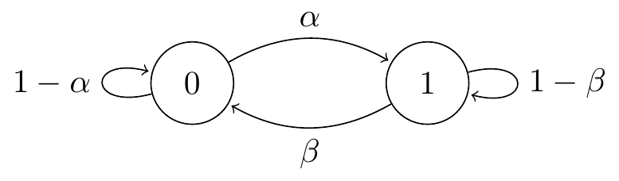

Section 10 Stationary distributions
- Stationary distributions and how to find them
- Conditions for existence and uniqueness of the stationary distribution
10.1 Definition {def-stationary-definition}
Consider the two-state “broken printer” Markov chain from Lecture 5.

Suppose we start the chain from the initial distribution \[ \lambda_0 = \mathbb P(X_0 = 0) = \frac{\beta}{\alpha+\beta} \qquad \lambda_1 = \mathbb P(X_0 = 1) = \frac{\alpha}{\alpha+\beta} . \] (You may recognise this from Question 1 on Problem Sheet 3.) What’s the distribution after step 1? By conditioning on the initial state, we have \[\begin{align*} \mathbb P(X_1 = 0) &= \lambda_0 p_{00} + \lambda_1 p_{10} = \frac{\beta}{\alpha+\beta}(1-\alpha) + \frac{\alpha}{\alpha+\beta}\beta = \frac{\beta}{\alpha+\beta} ,\\ \mathbb P(X_1 = 1) &= \lambda_0 p_{01} + \lambda_1 p_{11} = \frac{\beta}{\alpha+\beta}\alpha + \frac{\alpha}{\alpha+\beta}(1-\beta) = \frac{\alpha}{\alpha+\beta} . \end{align*}\] So we’re still in the same distribution we started in. By repeating the same calculation, we’re still going to be in this distribution after step 2, and step 3, and forever.
More generally, if we start from a state given by a distribution \(\boldsymbol \pi = (\pi_i)\), then after step 1 the probability we’re in state \(j\) is \(\sum_i \pi_i p_{ij}\). So if \(\pi_j = \sum_i \pi_i p_{ij}\), we stay in this distribution forever. In matrix form, this is \(\boldsymbol \pi = \boldsymbol \pi\mathsf P\). (Remember that \(\boldsymbol \pi\) is a row vector.) We call such a distribution a stationary distribution.
Definition 10.1 Let \((X_n)\) be a Markov chain on a state space \(\mathcal S\) with transition matrix \(\mathsf P\). Let \(\boldsymbol \pi = (\pi_i)\) be a distribution on \(\mathcal S\), in that \(\pi_i \geq 0\) for all \(i \in \mathcal S\) and \(\sum_{i \in \mathcal S} \pi_i = 1\). We call \(\boldsymbol \pi\) a stationary distribution if \[ \pi_j = \sum_{i\in \mathcal S} \pi_i p_{ij} \quad \text{for all $j \in \mathcal S$,} \] or, equivalently, if \(\boldsymbol \pi = \boldsymbol \pi\mathsf P\).
Note that we’re saying the distribution \(\mathbb P(X_n = i)\) stays the same; the Markov chain \((X_n)\) itself will keep moving. One way to think is that if we started off a thousand Markov chains, choosing each starting position to be \(i\) with probability \(\pi_i\), then (roughly) \(1000 \pi_j\) of them would be in state \(j\) at any time in the future – but not necessarily the same ones each time.
10.2 Finding a stationary distribution
Let’s try an example. Consider the no-claims discount Markov chain from Lecture 6 with state space \(\mathcal S=\{1,2,3\}\) and transition matrix \[ \mathsf P =\begin{pmatrix} \tfrac14 &\tfrac34 & 0\\ \tfrac14 &0 & \tfrac34\\ 0 &\tfrac14 & \tfrac34\\ \end{pmatrix} .\]
We want to find a stationary distribution \(\boldsymbol \pi\), which must solve the equation \(\boldsymbol \pi =\boldsymbol \pi\mathsf P\), which is \[ \begin{pmatrix} \pi_1 & \pi_2 & \pi_3 \end{pmatrix} = \begin{pmatrix} \pi_1 & \pi_2 & \pi_3 \end{pmatrix} \begin{pmatrix} \tfrac14 &\tfrac34 & 0\\ \tfrac14 &0 & \tfrac34\\ 0 &\tfrac14 & \tfrac34\\ \end{pmatrix} .\]
Writing out the equations coordinate at a time, we have \[\begin{align*} \pi_1 &= \tfrac14\pi_1+\tfrac14\pi_2 , \\ \pi_2 &= \tfrac34\pi_1+\tfrac14\pi_3 , \\ \pi_3 &= \tfrac34\pi_2+\tfrac34\pi_3 . \end{align*}\] Since \(\boldsymbol\pi\) must be a distribution, we also have the “normalising condition” \[ \pi_1+\pi_2+\pi_3=1 . \]
The way to solve these equations is first to solve for all the variables \(\pi_i\) in terms of a convenient \(\pi_{j}\) (called the “working variable”) and then substitute all of these expressions into the normalising condition to find a value for \(\pi_{j}\).
Let’s choose \(\pi_2\) as our working variable. It turns out that \(\boldsymbol\pi = \boldsymbol\pi \mathsf{P}\) always gives one more equation than we actually need, so we can discard one of them for free. Let’s get rid of the second equation, and the solve the first and third equations in terms of our working variable \(\pi_2\), to get \[\begin{equation} \pi_1=\tfrac13\pi_2 \qquad \pi_3=3\pi_2 . \tag{10.1} \end{equation}\]
Now let’s turn to the normalising condition. That gives \[ \pi_1+\pi_2+\pi_3 = \tfrac13\pi_2+\pi_2+3\pi_2 = \tfrac{13}{3} \pi_2 = 1 .\] So the working variable is solved to be \(\pi_2 = \frac{3}{13}\). Substituting this back into (10.1), we have \(\pi_1=\tfrac13\pi_2 = \frac{1}{13}\) and \(\pi_3=3\pi_2 = \frac{9}{13}\). So the full solution is \[ \boldsymbol \pi = (\pi_1\quad \pi_2\quad \pi_3) = \left(\tfrac{1}{13}\quad \tfrac{3}{13}\quad\tfrac{9}{13}\right). \]
The method we used here can be summarised as follows:
- Write out \(\boldsymbol \pi = \boldsymbol \pi\mathsf P\) coordinate by coordinate. Discard one of the equations.
- Select one of the \(\pi_i\) as a working variable and treat it as a parameter. Solve the equations in terms of the working variable.
- Substitute the solution into the normalising condition to find the working variable, and hence the full solution.
It can be good practice to use the equation discarded earlier to check that the calculated solution is indeed correct.
One extra example for further practice and to show how you should present your solutions to such problems:
Example 10.1 Consider a Markov chain on state space \(\mathcal S = \{1,2,3\}\) with transition matrix \[ \mathsf P = \begin{pmatrix} \tfrac12 & \tfrac14& \frac14 \\ \tfrac14& \frac12& \frac14 \\ 0 & \frac14 & \frac34 \end{pmatrix} . \] Find a stationary distribution for this Markov chain.
Step 1. Writing out \(\boldsymbol \pi = \boldsymbol \pi\mathsf P\) coordinate-wise, we have \[\begin{align*} \pi_1 &= \tfrac12 \pi_1 + \tfrac14\pi_2 \\ \pi_2 &= \tfrac14\pi_1 + \tfrac12\pi_2 + \tfrac14\pi_3 \\ \pi_3 &= \tfrac14\pi_1 + \tfrac14\pi_2 + \tfrac34\pi_3 . \end{align*}\] We choose to discard the third equation.
Step 2. We choose \(\pi_1\) as our working variable. From the first equation we get \(\pi_2 = 2\pi_1\). From the second equation we get \(\pi_3 = 2\pi_2 - \pi_1\), and substituting the previous \(\pi_2 = 2\pi_1\) into this, we get \(\pi_3 = 3\pi_1\).
Step 3. The normalising condition is \[ \pi_1 + \pi_2 + \pi_3 = \pi_1 + 2\pi_1 + 3\pi_1 = 6\pi_1 = 1 . \] Therefore \(\pi_1 = \frac16\). Substituting this into our previous expressions, we get \(\pi_2 = 2\pi_1 = \frac13\) and \(\pi_3 = 3\pi_1 = \frac12\). Thus the solution is \[ \boldsymbol\pi = \left( \tfrac16 \quad \tfrac13 \quad \tfrac12 \right) . \]
We can check our answer with the discarded third equation, just to make sure we didn’t make any mistakes. We get \[ \pi_3 = \tfrac14\pi_1 + \tfrac14\pi_2 + \tfrac34\pi_3 = \tfrac14\tfrac16 + \tfrac14\tfrac13+\tfrac34\tfrac12 = \tfrac1{24} + \tfrac2{24} + \tfrac{9}{24} = \tfrac{1}{2} , \] which is as it should be.
10.3 Existence and uniqueness
Given a Markov chain its natural to ask:
- Does a stationary distribution exist?
- If a stationary distribution does exists, is there only one, or are there be many stationary distributions?
The answer is given by the following very important theorem.
Theorem 10.1 Consider an irreducible Markov chain.
- If the Markov chain is positive recurrent, then a stationary distribution \(\boldsymbol \pi\) exists, is unique, and is given by \(\pi_i = 1/\mu_{i}\), where \(\mu_{i}\) is the expected return time to state \(i\).
- If the Markov chain is null recurrent or transient, then no stationary distribution exists.
We give an optional and nonexaminable proof to the first part below.
In our no-claims discount example, the chain is irreducible and, like all finite state irreducible chains, it is positive recurrent. Thus the stationary distribution \(\boldsymbol\pi = (\tfrac{1}{13}, \tfrac{3}{13}, \tfrac{9}{13})\) we found is the unique stationary distribution for that chain. Once we have the stationary distribution \(\boldsymbol\pi\), we get the expected return times \(\mu_i = 1/\pi_i\) for free: the expected return times are \(\mu_1 = 13\), \(\mu_2 = \frac{13}{3} = 4.33\), and \(\mu_3 = \frac{13}{9} = 1.44\).
Note the condition in Theorem 10.1 that the Markov chain is irreducible. What if the Markov chain is not irreducible, so has more than one communicating class? We can work out what must happen from the theorem:
- If none of the classes are positive recurrent, then no stationary distribution exists.
- If exactly one of the classes is positive recurrent (and therefore closed), then there exists a unique stationary distribution, supported only on that closed class.
- If more the one of the classes are positive recurrent, then many stationary distributions will exist.
Example 10.2 Consider the simple random walk with \(p \neq 0,1\). This Markov chain is irreducible, and is null recurrent for \(p = \frac12\) and transient for \(p \neq \frac12\). Either way, the theorem tells us that no stationary distribution exists.
Example 10.3 Consider the Markov chain with transition matrix \[ \mathsf P = \begin{pmatrix} \frac12 & \frac12 & 0 & 0 \\ \frac12 & \frac12 & 0 & 0 \\ 0 & 0 & \frac14 & \frac34\\ 0 & 0 & \frac12 & \frac12\end{pmatrix} . \] This chain has two closed positive recurrent classes, \(\{1,2\}\) and \(\{3,4\}\).
Solving \(\boldsymbol\pi = \boldsymbol\pi\mathsf P\) gives \[\begin{align*} \pi_1 = \tfrac12 \pi_1 + \tfrac12\pi_2 \qquad &\Rightarrow \qquad \phantom{3}\pi_1 = \pi_2 \\ \pi_2 = \tfrac12 \pi_1 + \tfrac12\pi_2 \qquad &\Rightarrow \qquad \phantom{3}\pi_1 = \pi_2 \\ \pi_3 = \tfrac14 \pi_3 + \tfrac12\pi_4 \qquad &\Rightarrow \qquad 3\pi_3 = 2\pi_4 \\ \pi_4 = \tfrac34 \pi_3 + \tfrac12\pi_4 \qquad &\Rightarrow \qquad 3\pi_3 = 2\pi_4 , \end{align*}\] giving us the same two constraints twice each. We also have the normalising condition \(\pi_1 + \pi_2+\pi_3+\pi_4 = 1\). If we let \(\pi_1 + \pi_2 = \alpha\) and \(\pi_3 + \pi_4 = 1-\alpha\), we see that \[ \boldsymbol\pi = \left(\tfrac12\alpha\quad \tfrac12\alpha\quad \tfrac25(1-\alpha)\quad \tfrac35(1-\alpha)\right) \] is a stationary distribution for any \(0 \leq \alpha \leq 1\), so we have infinitely many stationary distributions.
10.4 Proof of existence and uniqueness
This subsection is optional and nonexaminable.
It’s very important to be able to find the stationary distribution(s) of a Markov chain – you can reasonably expect a question on this to turn up on the exam. You should also know the conditions for existence and uniqueness of the stationary distribution. Being able to prove existence and uniqueness is less important, although for completeness we will do so here.
Theorem 10.1 had two points. The more important point was that irreducible, positive recurrent Markov chains have a stationary distribution, that it is unique, and that it is given by \(\pi_i = 1/\mu_i\). We give a proof of that below, doing the existence and uniqueness parts separately. The less important point was that null recurrent and transitive Markov chains do not have a stationary distribution, and this is more fiddly. You can find a proof (usually in multiple parts) in books such as Norris, Markov Chains, Section 1.7.
Existence: Every positive recurrent Markov chain has a stationary distribution.
Before we start, one last definition. Let us call a vector \(\boldsymbol\nu\) a stationary vector if \(\boldsymbol\nu \mathsf P = \boldsymbol\nu\). This is exactly like a stationary distribution, except without the normalisation condition that it has to sum to 1.
Proof. Suppose that \((X_n)\) is recurrent (either positive or null, for the moment).
Our first task will be to find a stationary vector. Fix an initial state \(k\), and let \(\nu_i\) be the expected number of visits to \(i\) before we return back to \(k\). That is, \[\begin{align*} \nu_i &= \mathbb E \# \{\text{visits to $i$ before returning to $k$}\} \\ &= \mathbb E \sum_{n=1}^{M_k} \mathbb P(X_n = i \mid X_0 = k) \\ &= \sum_{n=1}^\infty \mathbb P(X_n = i \text{ and } n \leq M_k \mid X_0 = k) , \end{align*}\] where \(M_k\) is the return time, as in Section 8. Let us note for later use that, under this definition, \(\nu_k = 1\), because the only visit to \(k\) is the return to \(k\) itself.
Since \(\boldsymbol\nu\) is counting the number of visits to different states in a certain (random) time, it seems plausible that \(\boldsymbol\nu\) suitably normalised could be a stationary distribution, meaning that \(\boldsymbol\nu\) itself could be a stationary vector. Let’s check.
We want to show that \(\sum_i \nu_i p_{ij} = \nu_j\). Let’s see what we have: \[\begin{align*} \sum_{i \in \mathcal S} \nu_i p_{ij} &= \sum_{i \in \mathcal S} \sum_{n=1}^\infty \mathbb P(X_n = i \text{ and } n \leq M_k \mid X_0 = k) \, p_{ij} \\ &= \sum_{n=1}^\infty \sum_{i \in \mathcal S} \mathbb P(X_n = i \text{ and } X_{n+1} = j \text{ and } n \leq M_k \mid X_0 = k) \\ &= \sum_{n=1}^\infty \mathbb P(X_{n+1} = j \text{ and } n \leq M_k \mid X_0 = k) . \end{align*}\] (Exchanging the order of the sums is legitimate, because recurrence of the chain means that \(M_k\) is finite with probability 1.) We can now do a cheeky bit of monkeying around with the index \(n\), by swapping out the visit to \(k\) at time \(M_k\) with the visit to \(k\) at time \(0\). This means instead of counting the visits from \(1\) to \(M_k\), we can count the visits from \(0\) to \(M_k - 1\). Shuffling the index about, we get \[\begin{align*} \sum_{i \in \mathcal S} \nu_i p_{ij} &= \sum_{n=0}^\infty \mathbb P(X_{n+1} = j \text{ and } n \leq M_k-1 \mid X_0 = k) \\ &= \sum_{n+1=1}^\infty \mathbb P(X_{n+1} = j \text{ and } n+1 \leq M_k \mid X_0 = k) \\ &= \sum_{n=1}^\infty \mathbb P(X_{n} = j \text{ and } n \leq M_k \mid X_0 = k) \\ &= \nu_j . \end{align*}\] So \(\boldsymbol\nu\) is indeed a stationary vector.
We now want normalise \(\boldsymbol\nu\) into a stationary distribution by dividing through by \(\sum_i \nu_i\). We can do this if \(\sum_i \nu_i\) is finite. But \(\sum_i \nu_i\) is the expected total number of visits to all states before return to \(k\), which is precisely the expected return time \(\mu_k\). Now we use assume that \((X_n)\) is positive recurrent. This means that \(\mu_k\) is finite, so \(\boldsymbol\pi = (1/\mu_k) \boldsymbol\nu\) is a stationary distribution.
Uniqueness: For an irreducible, positive recurrent Markov chain, the stationary distribution is unique and is given by \(\pi_i = 1/\mu_i\).
I read the following proof in Stirzaker, Elementary Probability, Section 9.5.
Proof. Suppose the Markov chain is irreducible and positive recurrent, and suppose \(\boldsymbol\pi\) is a stationary distribution. We want to show that \(\pi_i = 1/\mu_i\) for all \(i\).
The only equation we have for \(\mu_k\) is this one from Section 8: \[\begin{equation} \mu_k = 1 + \sum_j p_{kj} \eta_{jk} . \tag{10.2} \end{equation}\] Since that involves the expected hitting times \(\eta_{ik}\), let’s write down the equation for them too: \[\begin{equation} \eta_{ik} = 1 + \sum_j p_{ij} \eta_{jk} \qquad \text{for all $i \neq k$.} \tag{10.3} \end{equation}\]
In order to apply the fact that \(\boldsymbol\pi\) is a stationary distribution, we’d like to get these into an equation with \(\sum_i \pi_i p_{ij}\) in it. Here’s a way we can do that: Take (10.3), multiply it by \(\pi_i\) and sum over all \(i \neq k\), to get \[\begin{equation} \sum_{i} \pi_i \eta_{ik} = \sum_{i \neq k} \pi_i + \sum_j \sum_{i \neq k} \pi_i p_{ij} \eta_{jk} . \tag{10.4} \end{equation}\] (The sum on the left can be over all \(i\), since \(\eta_{kk} = 0\).) Also, take (10.2) and multiply it by \(\pi_k\) to get \[\begin{equation} \pi_k \mu_k = \pi_k + \sum_j \pi_k p_{kj} \eta_{jk} \tag{10.5} \end{equation}\] Now add (10.4) and (10.5) together to get \[ \sum_{i} \pi_i \eta_{ik} + \pi_k \mu_k = \sum_i \pi_i + \sum_j \sum_i\pi_i p_{ij} \eta_{jk} . \]
We can now use \(\sum_i\pi_i p_{ij} = \pi_j\), along with \(\sum_i \pi_i = 1\), to get \[ \sum_{i} \pi_i \eta_{ik} + \pi_k \mu_k = 1 + \sum_j \pi_j \eta_{jk} . \]
But the first term on the left and the last term on the right are equal, and because the Markov chain is irreducible and positive recurrent, they are finite. (That was our lemma in the previous section.) Thus we’re allowed to subtract them, and we get \(\pi_k \mu_k = 1\), which is indeed \(\pi_k = 1/\mu_k\). We can repeat the argument for every choice of \(k\).
In the next section, we see how the stationary distribution tells us very important things about the long-term behaviour of a Markov chain.